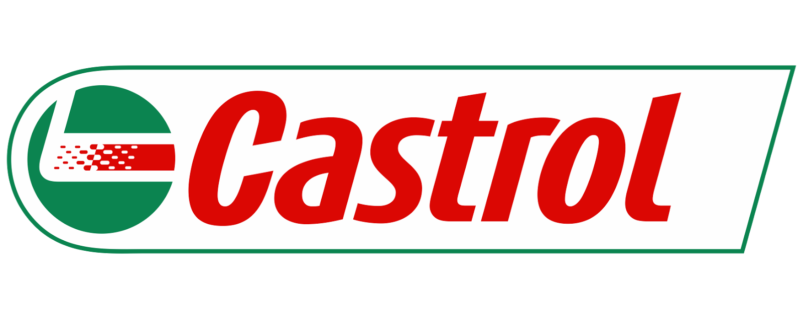

Zadejte VIN kód vozidla
VIN najdete na zadní straně malého technického průkazu nebo za předním sklem u volantu.
VIN můžete naskenovat pomocí fotoaparátu — stačí vyfotit nebo vybrat z galerie a pole se vyplní automaticky, nebo ho zadejte ručně níže.
Naskenovat VIN
Vaše vozidlo
Výběr oleje
Načítá se databáze

Castrol
Standard Doporučujeme
15 000 km / 1 rok
Nejlepší péče pro maximální životnost motoru a turbodmychadla. Častější výměna brání usazování nečistot a udržuje motor v kondici jako u nového vozu.
Long Life
30 000 km / 2 roky
Varianta vhodná pro vozy s vysokým ročním nájezdem, které se pohybují převážně na dlouhých dálničních trasách. Umožňuje prodloužit interval návštěvy servisu při zachování předepsaných norem výrobce.
Pro vaše vozidlo nemáme olej v ceníku. Odešlete poptávku a my vás kontaktujeme.
Odeslat k nacenění
Zadejte email a my vám pošleme cenovou nabídku přímo pro vaše vozidlo.
Výměna oleje
—
—
Olejový filtr
—
Cena za výměnu
Práce, ekologická likvidace a reset servisního intervalu
—
Celkem—
Vzduchový filtr Volitelné
Průchodný filtr znamená nižší spotřebu a plný výkon motoru. Výměnou každých 30 000 km zajistíte, že motor nebude zbytečně namáhán kvůli nedostatku vzduchu.
Vzduchový filtr
Cena filtru včetně výměny
—
Bez vzduchového filtru
Vyberte prosím jednu z možností.
Kabinový filtr Volitelné
Čistý filtr chrání posádku před alergeny a zamezuje pronikání nepříjemných pachů do interiéru. Zajišťuje svěží vzduch během jízdy, šetří klimatizaci a účinně zabraňuje zamlžování oken. Doporučujeme měnit každý rok.
Vyberte prosím jednu z možností.
Palivový filtr Volitelné
Klíčová ochrana pro citlivé a drahé vstřikovače před nečistotami v naftě. Výměna v rozmezí 30 000–60 000 km je nejlevnější pojistkou proti náhlým poruchám palivového systému a špatným startům.
Palivový filtr
Cena filtru včetně výměny
—
Bez palivového filtru
Vyberte prosím jednu z možností.
Souhrn objednávky
Celkem
Slevový kód
Vyberte termín
⚠️ Omlouváme se, tento termín byl právě obsazen. Vyberte prosím jiný čas.
Nejbližší dostupný termín je za 3 pracovní dny.
Kontaktní údaje
Vyplňte prosím své údaje pro potvrzení rezervace.
✅
Rezervace odeslána!
Termín je rezervovaný. Potvrzení s detaily a odkazem na zrušení jsme vám poslali e-mailem. Pokud ho do pár minut nenajdete, podívejte se do spamu.
Děkujeme za důvěru.
Děkujeme za důvěru.